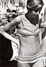
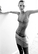
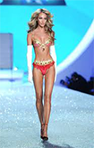

With the rise of mass media, the social standard of what makes a woman objectively beautiful has undergone drastic changes throughout the 20th century. From hourglass figures like Marilyn Monroe, to “heroine chic” ultra skinny looks like Kate Moss, the American woman has been told for more than 100 years she needs to look more like an idealized type than be content with her body. These mass marketing campaigns aimed at making money for the suppliers of clothing, mascara, nail polish, workout videos, tanning salons, skin care, to name a few, have inadvertently created a culture of women dissatisfied with their bodies. Today, girls as young as 6-years-old are complaining they are too fat, increasing the likelihood of anorexia and other eating disorders. The pressure to be skinny to conform to the objective idea of beauty has increased dramatically through out the years to the point were a size 6 has become “plus size” in the modeling industry when the average American woman today is a size 14. In comparison to 50-years-ago when the average woman was a size 8 and the average model weighed only 8% less, not 23%. The facts is, as history chronicles below, what is beautiful today, may not be beautiful 20 years from now. However, if women keep trying to achieve these impossible standards of beauty, they will forever be dissatisfied with their bodies and waste thousands of dollars trying to achieve a look that is not only unreal, but unhealthy.
In the beginning of the 20th century, women wore corsets to achieve the exaggerated look of a tiny waist, but voluptuous figure. Illustrator Charles Dana Gibson, synthesized the American beauty of the time in a series of illustrations he termed the Gibson girl based on “thousands of American girls”. Models like Camille Clifford, who won a contest to find the real life Gibson girl, depicted the objective standard of beauty at the time: tall, slender, with a tiny waist (22 inches or less), curves, and long hair. However, at the end of World War I, this standard of beauty was turned on its head with the arrival of the flapper.
Women were given the right to vote in the 1920’s and it set the mood for the time. Women who worked during World War I wanted to remain working and the standard of beauty changed from prim and proper, the corset age, to androgynous. The ideal beauty was a tall, slender woman with no curves and short hair. To achieve the look, bra companies started creating bras that tightened the breast to make the bust look smaller. In addition, women started wearing make-up and nail polish to achieve the look depicted in advertisements. The nail industry grew from $150,000 in 1916 to $2 million by 1920. Unfortunately, this freewheeling lifestyle came to an end with the Great Depression and so did this boyish definition of beauty.
The impact of the Great Depression brought back a more traditional body image. Advertisers were now telling women how to avoid a too skinny look in favor of a more hourglass figure. Women were taught how to alter unused men’s suits into women’s clothing. Women of the day aspired to look more curvaceous and emphasized their feminine figure in stark contrast to the flapper girl. In this era, the celebrity figure was not too dissimilar from the average girl. Lena Horne, for example had a Body Mass Index (a measure of body fat calculated by height and weight used by health professionals to determine a healthy weight) of 20.3 not too far from the average women who had a BMI of 23.6 (equivalent to a woman 5”3 and 130 pounds).
By the 1950’s, Hollywood was not only defining what women wore, but also, the standard of beauty. Legendary actresses such as Marilyn Monroe redefined beauty to emphasize the fuller-figure women with ample bust and a more voluptuous figure. Monroe, for example was 5’5 and averaged 118 lbs, with a BMI of 20. She had a bust of 35, a 22-inch waist, 35-inch hips and wore a 36D bra size. For today’s standards a 22-inch waist would not even fit a size 2, but at the time the average American women had a 25-inch waist not the modern-day 34-inch waist. Even though many images portray Monroe as being “bigger” than an average model today, the fact is she was not. With the lack of modern technology in photography, such as Photoshop, Monroe was depicted as she was instead of an impossible unrealistic version or herself.
The 1960’s saw the women’s liberation movement bringing along with it birth control pills, more women in the work place and feminism. The ideal beauty shifted back to the flapper era where boyish looks became popular. Models like Twiggy, with no curves, short hair and extremely skinny were epitomized. Twiggy was 5’6 and under 100 lbs, with a BMI of 15, which is considered an unhealthy, underweight BMI, even anorexic. The 1970s saw a proliferation of Twiggy like beauties. Skinny was in and it had a great impact on women’s health and eating habits. Anorexia became mainstream in this era with singer Karen Carpenter who was known to diet at starvation levels and eventually died of the disease in 1983. This era also saw a rise in diet pills as women struggled to be unhealthily skinny to resemble celebrities like Morgan Fairchild with a BMI of 18 compared to the average American women at the time with a BMI of 24.9.
By the 1980s, dieting was not the only way a women was expected to keep her slim figure. Although skinny continued to be the ideal beauty, the 80s brought with it an emphasis on a toned physique. Toned, but not overly muscular bodies were praised, and exercise videos became widespread in this era. Gyms also multiplied in this decade commencing the age of corporate gyms. Supermodels emerged on the scene with icons such as Naomi Campbell standing at 5’10 and 110 lbs with a BMI of 15 representing the ideal beauty and physique while the average American women remained at a BMI of 25.
The 1990’s continued the culture of skinny, but brought with it the exaggerated Pamela Anderson look; super skinny with huge breasts. In a 1998 study, 34% of women said they were dissatisfied with their breasts and breast augmentation rose in demand with the introduction of saline implants. The fashion industry also changed the standard of beauty with models such as Kate Moss, which represented the ultra-skinny “heroin chic” look of the time and unlike the supermodels of the 80s, focused on thinness alone and a bony appearance. Kate Moss had a BMI of 16, which was in stark contrast to the average BMI among American women at the time: 26.5, the equivalent of 5’5 and 160 lbs.
The average BMI of the American women rose to 27.5 in the 2000s in comparison with the ideal beauty and celebrity images, which remained between 15-16 for models and 17-20 for actresses. The trend throughout the century is clear: Celebrities and the ideal beauty has decreased in BMI, while the average American woman has increased. In the 1950s, Marilyn Monroe had a BMI of 20; Twiggy a BMI of 15; '80s super model Cindy Crawford had a BMI of 19, while Kate Moss's BMI was only 16. By comparison, the average American woman had a BMI of 25.2 in the 60's, 24.9 in the 70's, 25 in the 80's, and 26.3 in the 90's. As the size of the average woman continued to increase models and actresses maintained what is by comparison a super-thin look, which is not only impossible to achieve as it is mostly Photoshoped, but also dangerously unhealthy.
